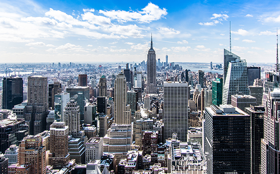

Angekommen in New York
2. Oktober 2018
Nach einem langen Flug bin ich endlich in New York angekommen. Die Stadt, die niemals schläft, hat mich sofort in ihren Bann gezogen. Schon bei der Fahrt vom Flughafen in die Stadt konnte ich die beeindruckende Skyline bewundern. Die Wolkenkratzer ragen majestätisch in den Himmel und vermitteln ein Gefühl von Größe und Unendlichkeit.
Mein erster Stopp war der Times Square. Die unzähligen Lichter und riesigen Werbetafeln sind überwältigend. Es ist ein Ort voller Energie und Leben, wo Menschen aus aller Welt zusammenkommen. Ich habe mich einfach in die Menge gestürzt und die Atmosphäre aufgesogen.
Am nächsten Tag stand ein Besuch des Central Parks auf dem Programm. Der Kontrast zwischen der Natur und den umliegenden Hochhäusern ist faszinierend. Ich habe einen langen Spaziergang gemacht, die frische Luft genossen und die vielen verschiedenen Facetten des Parks entdeckt.
Natürlich durfte auch ein Besuch der Freiheitsstatue nicht fehlen. Die Fähre zur Liberty Island bot einen atemberaubenden Blick auf die Skyline von Manhattan. Die Statue selbst ist ein Symbol für Freiheit und Hoffnung und es war ein bewegender Moment, sie aus nächster Nähe zu sehen.
New York hat so viel zu bieten und ich freue mich darauf, in den nächsten Tagen noch mehr von dieser unglaublichen Stadt zu entdecken. Von den Museen über die vielfältige Gastronomie bis hin zu den versteckten Ecken in den verschiedenen Stadtteilen – es gibt immer etwas Neues zu erleben.
Hinweis: Dieser Text wurde mit Hilfe von GitHub Copilot (GPT 4o) generiert.